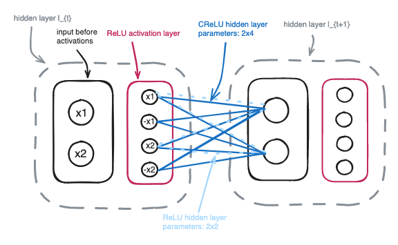

<!doctype html>
<html lang="en"><head>
    <title>Loss of plasticity in continual deep reinforcement learning</title>
    
    <!DOCTYPE html>
<html lang="en">
<head>
    <meta charset="UTF-8">
    <link rel="stylesheet" href="https://cdn.jsdelivr.net/npm/katex@0.16.4/dist/katex.min.css" integrity="sha384-vKruj+a13U8yHIkAyGgK1J3ArTLzrFGBbBc0tDp4ad/EyewESeXE/Iv67Aj8gKZ0" crossorigin="anonymous">

    
    <script defer src="https://cdn.jsdelivr.net/npm/katex@0.16.4/dist/katex.min.js" integrity="sha384-PwRUT/YqbnEjkZO0zZxNqcxACrXe+j766U2amXcgMg5457rve2Y7I6ZJSm2A0mS4" crossorigin="anonymous"></script>

    
    <script defer src="https://cdn.jsdelivr.net/npm/katex@0.16.4/dist/contrib/auto-render.min.js" integrity="sha384-+VBxd3r6XgURycqtZ117nYw44OOcIax56Z4dCRWbxyPt0Koah1uHoK0o4+/RRE05" crossorigin="anonymous"
        onload="renderMathInElement(document.body);"></script>

    <script>
        document.addEventListener("DOMContentLoaded", function() {
            renderMathInElement(document.body, {
                delimiters: [
                    {left: "$$", right: "$$", display: true},
                    {left: "$", right: "$", display: false}
                ]
            });
        });
        </script>
</head>
<body>
</body>
</html>
    
    <meta charset="utf-8">
    <meta name="viewport" content="width=device-width, initial-scale=1, shrink-to-fit=no">
    <meta name="description" content="" />

    
    
    
    <link rel="stylesheet" href="../../../css/theme.min.css">

    
    
    
    
    <link rel="stylesheet" href="../../../css/custom.min.css">
    

    
</head>
<body>
        <div id="content" class="mx-auto"><header class="container mt-sm-5 mt-4 mb-4 mt-xs-1">
    <div class="row">
        
        <div class="col-sm-4 col-12 text-sm-right text-center pt-sm-4">
            <a href="../../../" class="text-decoration-none">
                
            </a>
        </div>
        <div class="col-sm-8 col-12 text-sm-left text-center">
        
            <h2 class="m-0 mb-2 mt-4">
                <a href="../../../" class="text-decoration-none">
                    
                        Dan
                    
                </a>
            </h2>
            <p class="text-muted mb-1">
                
                    AI Engineer
                
            </p>
            <ul id="nav-links" class="list-inline mb-2">
                
                
                    <li class="list-inline-item">
                        <a class="badge badge-white " href="../../../" title="About">About</a>
                    </li>
                
                    <li class="list-inline-item">
                        <a class="badge badge-white active" href="../../../posts/" title="Posts">Posts</a>
                    </li>
                
                    <li class="list-inline-item">
                        <a class="badge badge-white " href="../../../categories/" title="Categories">Categories</a>
                    </li>
                
            </ul>
            <ul id="nav-social" class="list-inline">
                
            </ul>
        </div>
    </div>
    <hr />
</header>
<div class="container">

<!DOCTYPE html>
<html lang="en">
<head>
    <meta charset="UTF-8">
    <link rel="stylesheet" href="https://cdn.jsdelivr.net/npm/katex@0.16.4/dist/katex.min.css" integrity="sha384-vKruj+a13U8yHIkAyGgK1J3ArTLzrFGBbBc0tDp4ad/EyewESeXE/Iv67Aj8gKZ0" crossorigin="anonymous">

    
    <script defer src="https://cdn.jsdelivr.net/npm/katex@0.16.4/dist/katex.min.js" integrity="sha384-PwRUT/YqbnEjkZO0zZxNqcxACrXe+j766U2amXcgMg5457rve2Y7I6ZJSm2A0mS4" crossorigin="anonymous"></script>

    
    <script defer src="https://cdn.jsdelivr.net/npm/katex@0.16.4/dist/contrib/auto-render.min.js" integrity="sha384-+VBxd3r6XgURycqtZ117nYw44OOcIax56Z4dCRWbxyPt0Koah1uHoK0o4+/RRE05" crossorigin="anonymous"
        onload="renderMathInElement(document.body);"></script>

    <script>
        document.addEventListener("DOMContentLoaded", function() {
            renderMathInElement(document.body, {
                delimiters: [
                    {left: "$$", right: "$$", display: true},
                    {left: "$", right: "$", display: false}
                ]
            });
        });
        </script>
</head>
<body>
</body>
</html>

    <div class="pl-sm-2">
        <div class="mb-3">
            <h3 class="mb-0">Loss of plasticity in continual deep reinforcement learning</h3>
            
            <small class="text-muted">Published October 30, 2023</small>
        </div>

        <article>
            <table>
  <thead>
      <tr>
          <th style="text-align: left"></th>
          <th style="text-align: left"></th>
      </tr>
  </thead>
  <tbody>
      <tr>
          <td style="text-align: left"><strong>Title</strong>:</td>
          <td style="text-align: left">Loss of plasticity in continual deep reinforcement learning</td>
      </tr>
      <tr>
          <td style="text-align: left"><strong>Authors</strong>:</td>
          <td style="text-align: left">Zaheer Abbas, Rosie Zhao, Joseph Modayil, Adam White, Marlos C. Machado</td>
      </tr>
      <tr>
          <td style="text-align: left"><strong>Link</strong>:</td>
          <td style="text-align: left"><a href="https://arxiv.org/pdf/2303.07507.pdf">https://arxiv.org/pdf/2303.07507.pdf</a></td>
      </tr>
  </tbody>
</table>
<h4 id="what">What</h4>
<hr>
<p>The study shows how continual deep reinforcement learning (RL) experiences a significant loss of plasticity. By carefully and thoroughly examining three statistics - weight change, gradient norm, and neural network activations - the authors prove that traditional value-based deep RL methods in DQN and Rainbow are inadequate for continual learning. The benchmark for continual learning is a sequence of Atari 2600 games.</p>
<h4 id="why">Why</h4>
<hr>
<p>For many challenging and interesting real-world problems where RL is applied to effectively learn controller systems, the environment is changing frequently maybe due to patterns in the environment or sensory drifts of the agent. To learn such a policy requires systems to continually learn.</p>
<h4 id="how">How</h4>
<hr>
<p>To prevent the loss of plasticity caused by diminishing activations in a neural network during continual training, a simple but highly effective technique is used: substituting Rectified Linear Units (ReLUs) for Concatenated ReLU (CReLUs).</p>
<blockquote>
<p><strong>TL;DR</strong>: Replacing ReLU activations with CReLUs mitigates the drastic decrease in non-zero activations during continual learning.</p>
</blockquote>
<h5 id="agent">Agent</h5>
<p>Concretely for the RL agent, the authors focus on value-based deep RL methods and use DQN <sup id="fnref:1"><a href="#fn:1" class="footnote-ref" role="doc-noteref">1</a></sup> and Rainbow <sup id="fnref:2"><a href="#fn:2" class="footnote-ref" role="doc-noteref">2</a></sup> (which is an amalgam of the best variants of DQN).</p>
<ul>
<li>Single agent with single neural network and single environment (synchronous training)</li>
</ul>
<h5 id="environment">Environment</h5>
<p>The environment used is a sequence of games from the Atari Learning Environment (ALE) with some minor modifications:</p>
<ul>
<li>They follow Machado et al. (2018)&rsquo;s <sup id="fnref:3"><a href="#fn:3" class="footnote-ref" role="doc-noteref">3</a></sup> recommendations of evaluation protocol in ALE
<ul>
<li>injecting stochasticity through sticky actions</li>
<li>ignore the lives signal</li>
<li>report average performance during training</li>
</ul>
</li>
</ul>
<p>ALE is modified for continual learning. Specifically:</p>
<ul>
<li>Learning on a fixed sequence of games:
<ul>
<li>learn for a fixed number of frames (e.g., $10^6$) then switch to the next game <em>without</em> resetting weights nor flushing the replay buffer.</li>
<li>buffer is explicitly designed too be too small to contain only frames from the same game</li>
</ul>
</li>
<li>Varying non-stationarity by chaning the game mode within a single game:
<ul>
<li>3 Atari 2600 games (Breakout, Freeway, and Space Invaders)</li>
</ul>
</li>
</ul>
<dl>
<dt>Agent performance</dt>
<dd>The agent&rsquo;s performance is measured as the average score received per episode over the last 1000 episodes <sup id="fnref1:3"><a href="#fn:3" class="footnote-ref" role="doc-noteref">3</a></sup>.</dd>
</dl>
<h5 id="statistics-used-to-characterize-loss-of-plasticity">Statistics used to characterize loss of plasticity</h5>
<p>Below I attempt to give a more formal specification of the statistics computed. With $\bm{\theta}$ I denote all the parameters, structured layer-wise, such that indexing by the second subscript gives the parameters at layer $l$. Indexing by the first subscript gives the parameters at visit $\text{v}$. A <em>visit</em> is the sequence of experience an agent encounters in a single game <sup id="fnref:4"><a href="#fn:4" class="footnote-ref" role="doc-noteref">4</a></sup>.</p>
<dl>
<dt>Weight change</dt>
<dd>Defined as the per-visit weight change between when the agent started playing the game in that visit and when it got halfway through the visit:</dd>
</dl>
<ul>
<li>per-layer normalization</li>
<li>aggregation of all layers using weighted arithmetic mean</li>
</ul>
<p>$$
\begin{align}
f_{\text{weight\_change}}^{\text{v}}(\bm{\theta}^{\text{start\_visit}}_{\text{v}, :}, \bm{\theta}^{\text{halfway\_visit}}_{\text{v}, :}) \stackrel{.}{=} \\
\frac{\sum_{l \in \text{layers}} | \bm{\theta}_{\text{v}, l} | \frac{ \Vert \bm{\theta}^{\text{start\_visit}}_{\text{v}, l} - \bm{\theta}^{\text{halfway\_visit}}_{\text{v}, l} \Vert_2 }{f_{\text{weight\_change}}^{\text{1}} }}{\sum_{l \in \text{layers}} | \bm{\theta}_{\text{v}, l} | } \notag
\end{align}
$$</p>
<ul>
<li><strong>Maintaining plasticity</strong>: Regularly changing the weights in a continually changing environment leads to acquiring new knowledge. On the other hand, if no weight change occurs, it results in a failure to acquire new knowledge.</li>
</ul>
<dl>
<dt>Loss function</dt>
<dd>Defined as the average over 100 minibatches (of size 32 here) evaluated with the network parameters at halfway of a visit.</dd>
</dl>
<p>$$
\begin{align}
f_{\text{loss}}(\bm{\theta}^{\text{halfway\_visit}}_{\text{v}, :}, \text{d}_{\text{batches}}) \stackrel{.}{=} \\
\frac{1}{100} \sum_{\text{b}=0}^{99} \frac{1}{32} \sum_{\text{i}=0}^{31} f_{\text{network}}(\bm{\theta}^{\text{halfway\_visit}}_{\text{v}, :}, \text{d}_{\text{batches}} [ \text{b}, \text{i} ]) \notag
\end{align}
$$</p>
<p>Where $\text{d}_{\text{batches}} [ \text{b}, \text{i} ]$ is a tensor that stacks batches of examples on rows.</p>
<ul>
<li><strong>Maintaining plasticity</strong>: If a game is visited more than once (but not one after another) and the loss function is decreasing as new knowledge is acquired, then plasticity is maintained.</li>
</ul>
<dl>
<dt>Gradient norm</dt>
<dd>The average norm of the gradients of the 100 mini-batches is determined by evaluating the network parameters halfway through a visit. This evaluation is carried out using the same mini-batches that were used to calculate the loss above. As with the weight change in Eq. (1), the gradient norms are normalized based on the gradient norm from the first visit. Using weighted mean arithmetic, all the per-layer gradient norms are then averaged.</dd>
<dt>Activations</dt>
<dd>The average $_0$-norm of the activations of the network is determined by evaluating the output of the convolutional network output layer, the Value network layer, and the Advantage network layer. The activation norms are computed per-layer and scaled by the number of units in that layer. They are averaged over the same 100 mini-batches (use for computing the gradient norm) each averaged over the 32 examples in each batch.</dd>
</dl>
<ul>
<li><strong>Maintaining plasticity</strong>: If the hidden units have zero activations, then there won&rsquo;t be any gradient flow back. As a result, gradients will be increasingly diminished. Almost zero or completely zero gradients indicates that weights are hardly changed. Ultimately, this results in the failure to acquire new knowledge in S-ALE.</li>
</ul>
<h5 id="method-mitigating-loss-of-plasticity-with-crelus">Method: Mitigating loss of plasticity with CReLUs</h5>
<p>To mitigate the diminishing number of non-zero activations, the authors propose replacing ReLUs with CReLUs. CReLU takes an input, stacks the input with the negative of the input and applies ReLU on the two inputs:</p>
<p>$$ \text{CReLU}(x) \stackrel{.}{=} \text{ReLU}( [ x, -x ]^\top) $$</p>
<ul>
<li>CReLU is increasing the number of non-zero activations, since the only way that activations can become zero is if the input to CReLU is exactly zero.</li>
<li>CReLU doubles the number of outputs for each input signal $\Rightarrow$ storage and per-step computation is doubled.</li>
</ul>
<p>To make methods with CReLU and ReLU comparable in terms of effective network capacity in the experiments the inputs/outputs need to be controlled.</p>
<p>In one approach the authors utilized an <em>input invariant dimension</em>, where the number of inputs were fixed before applying the activation layer.</p>

  <figure>
    
    <figcaption><b>Fig. 1:</b> An invariant input dimension doubles the parameters of a hidden layer with CReLUs activations.</figcaption>
  </figure>

<h4 id="thoughts">Thoughts</h4>
<hr>
<ul>
<li>According to what criteria was the game sequence for S-ALE selected?</li>
<li>ReLU is the most established activation function for Rainbow and DQN agents. How much loss of plasticity would other activation functions such as <em>SELU</em>.</li>
<li>Varying the number of frames per visit (from 10M, 20M up to 50M) did not make a big difference and there was still loss of plasticity.</li>
</ul>
<h4 id="references">References</h4>
<div class="footnotes" role="doc-endnotes">
<hr>
<ol>
<li id="fn:1">
<p>Mnih, V., Kavukcuoglu, K., Silver, D., Rusu, A. A., Veness, J., Bellemare, M. G., &hellip; &amp; Hassabis, D. (2015). Human-level control through deep reinforcement learning. nature, 518(7540), 529-533.&#160;<a href="#fnref:1" class="footnote-backref" role="doc-backlink">&#x21a9;&#xfe0e;</a></p>
</li>
<li id="fn:2">
<p>Hessel, M., Modayil, J., Van Hasselt, H., Schaul, T., Ostrovski, G., Dabney, W., &hellip; &amp; Silver, D. (2018, April). Rainbow: Combining improvements in deep reinforcement learning. In Proceedings of the AAAI conference on artificial intelligence (Vol. 32, No 1).&#160;<a href="#fnref:2" class="footnote-backref" role="doc-backlink">&#x21a9;&#xfe0e;</a></p>
</li>
<li id="fn:3">
<p>Machado, M. C., Bellemare, M. G., Talvitie, E., Veness, J., Hausknecht, M., &amp; Bowling, M. (2018). Revisiting the arcade learning environment: Evaluation protocols and open problems for general agents. Journal of Artificial Intelligence Research, 61 523-562.&#160;<a href="#fnref:3" class="footnote-backref" role="doc-backlink">&#x21a9;&#xfe0e;</a>&#160;<a href="#fnref1:3" class="footnote-backref" role="doc-backlink">&#x21a9;&#xfe0e;</a></p>
</li>
<li id="fn:4">
<p>Multiple visits to the same game are possible with zero or more games between two consecutive visits.&#160;<a href="#fnref:4" class="footnote-backref" role="doc-backlink">&#x21a9;&#xfe0e;</a></p>
</li>
</ol>
</div>

        </article>
    </div>

            </div>
        </div><footer class="text-center pb-1">
    <small class="text-muted">
        &copy; 2022-2024
        <br>
        Built with <a href="https://gohugo.io/" target="_blank">Hugo</a>
        based on <a href="https://github.com/austingebauer/devise" target="_blank">Devise</a>
        theme from <a href="https://github.com/austingebauer/devise" target="_blank">A. Gebauer.</a>
    </small>
</footer>
</body>
</html>
